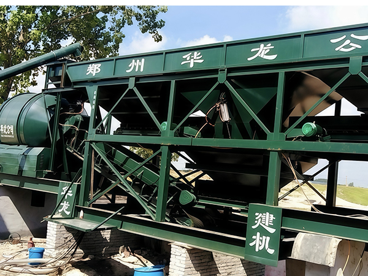

Drum type trailer mobile concrete plant for flexible construction operations

YUDA trailer-mounted drum-type mobile concrete plant — tow and go
The YUDA trailer mobile concrete plant is a compact, towable concrete production unit. Unlike our forced-type mobile plant (which uses a JS twin-shaft mixer), the trailer version uses a self-falling drum mixer — similar to a concrete truck mixer drum. It is designed for maximum portability: a standard truck can tow it to site, and it can start producing concrete within hours. This makes it the most economical choice for small-scale projects, remote construction, and applications where the plant needs to move frequently.
Projects in areas without access to ready-mix concrete supply. The plant goes where the project is.
Village roads, small bridges, drainage channels, and utility projects that need small batches of concrete.
Linear projects that span long distances — move the plant along the route as work progresses.
Farm roads, irrigation structures, animal sheds, and other agricultural concrete needs.
Quick deployment for disaster relief, military camps, and temporary infrastructure where speed matters.
Complete unit on a trailer chassis with towing hitch. A standard truck or SUV can tow it. No special permits required for transport.
Quickest setup of any concrete plant type. Park on level ground, connect power, and start batching within hours.
Most affordable concrete plant option. No foundation, no site preparation, no erection costs. Ideal for budget-conscious projects.
Simple, reliable drum mixing technology. Easy to maintain and repair. Lower power consumption than forced mixers.
Small footprint and low height. Fits through standard gates and under low bridges. No oversize transport issues.
Optional winterization kit for cold climate operation. Dust-proof design for arid environments.
| Specification | Data |
|---|---|
| Mixer Type | Self-Falling Drum Mixer |
| Rated Feeding Capacity | 1200L |
| Rated Discharging Capacity | 750L (0.75m³) |
| Production Capacity | ≥20m³/h |
| Mixer Power | 30KW |
| Aggregate Bin Capacity | 3 × 6m³ |
| Cement Silo Capacity | 20T / 30T (optional) |
| Weighing Accuracy | Aggregate: ±2%, Cement: ±1%, Water: ±1% |
| Control System | PLC + Manual Override |
| Total Power | ≈45KW |
| Discharge Height | 3.5m |
| Transport Dimensions (L×W×H) | 10m × 2.3m × 2.8m |
| Towing Speed | ≤60 km/h on paved roads |
YUDA offers two types of mobile concrete plants. Which one is right for your project?
No. A standard truck, tractor, or heavy SUV can tow the unit on paved roads up to 60 km/h. No special license or permit required for most regions.
Usually 2-4 hours. Level the ground, disconnect the tow vehicle, connect power and water, and the plant is ready.
Drum mixers use a rotating drum to tumble and mix ingredients — simple and energy-efficient. Forced mixers use twin shafts with mixing blades — higher quality but more power. Drum type is ideal for small projects, forced type for commercial-grade concrete.
Yes. All YUDA mobile plants are CE certified and built to ISO 9001:2015 quality standards.
Tell us about your project and we'll recommend the right mobile plant solution. Factory direct pricing available.
Request Quote